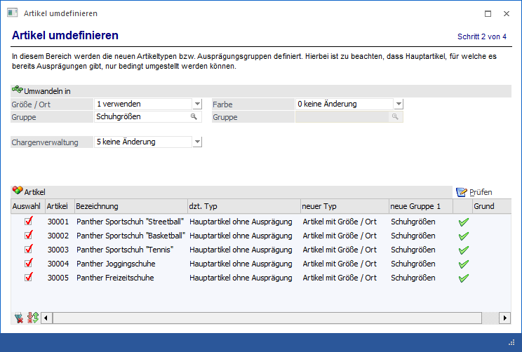
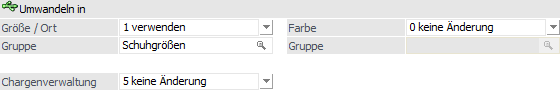
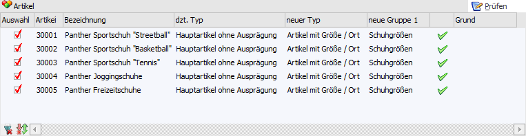

In dem Bereich "Definition der zu verwendenden Ausprägungen" kann definiert werden, wie die Ausprägungen bei den Artikeln verändert werden sollen. Hierbei ist es allerdings nur möglich Ausprägungen hinzuzufügen, bereits vorhandene Ausprägungen können nicht entfernt werden.

Folgende Felder stehen zur Angabe der Umwandlung zur Verfügung:
Umwandeln in

Ø Ausprägung 1 (hier "Größe / Ort") / Ausprägung 2 (hier "Farbe")
Aus der Auswahlbox kann gewählt werden, wie mit der Ausprägung 1 und Ausprägung 2 verfahren werden soll. Folgende Möglichkeiten stehen zur Verfügung:
ü 0 - keine Änderung
Mit dieser
Option wird die Einstellung für die Ausprägung 1 bzw. Ausprägung 2 nicht
verändert.
ü 1 - verwenden
Mit dieser Option
wird definiert, dass der Artikel mit der Ausprägung 1 bzw. Ausprägung 2 versehen
werden soll.
ü 2 - nicht verwenden
Diese
Option kann nur dann verwendet werden, wenn die Ausprägung 1 bzw. Ausprägung 2
bei dem Artikel zwar definiert wurde, für diese Ausprägung aber noch keine
Artikel angelegt wurden.
Ø Chargenverwaltung
An dieser Stelle kann definiert werden, ob und in welcher Form die Chargenverwaltung verwendet werden soll. Folgende Möglichkeiten stehen zur Verfügung:
ü 0 - Charge
Mit dieser
Einstellung wird definiert, dass der Artikel zusätzlich eine Chargenverwaltung
erhalten soll.
ü 1 - Identnummer
Mit dieser
Einstellung wird definiert, dass der Artikel zusätzlich eine
Seriennummernverwaltung erhalten soll.
ü 2 - Keine
Diese Option kann nur
verwendet werden, wenn ein Artikel bereits einmal mit Chargenverwaltung (also
Charge, Ident, LIFO oder FIFO) definiert wurde, dabei aber noch keine
Ausprägungen angelegt wurden.
ü 3 - LIFO
Mit dieser Einstellung
wird definiert, dass der Artikel zusätzlich eine LIFO-Verwaltung (Last in First
out) erhalten soll.
ü 4 - FIFO
Mit dieser Einstellung
wird definiert, dass der Artikel zusätzlich eine FIFO-Verwaltung (First in First
out) erhalten soll.
ü 5 - keine Änderung
Mit dieser
Einstellung wird die Einstellung der Chargenverwaltung nicht verändert.
Prüfen
Ø Prüfen
Durch Anklicken des "Prüfen"-Buttons erfolgt für alle Artikel der Tabelle eine Prüfung, ob die gewünschte Änderung durchführbar ist. Die Durchführbarkeit wird in der vorletzten Spalte der Tabelle durch ein Symbol ausgewiesen.
ü  - Änderung kann durchgeführt werden
- Änderung kann durchgeführt werden
ü - Änderung kann nicht durchgeführt werden
Hinweis
In der Spalte "Grund" wird ausgewiesen, warum die Umstellung nicht durchgeführt werden kann (z.B. weil bereits Ausprägungen angelegt sind).
Tabelle "Umstellungsartikel"

In der Tabelle werden alle umzudefinierenden Artikel angezeigt. Nach Drücken des "Prüfen"-Buttons wird pro Artikelzeile ausgewiesen, ob eine Umstellung erfolgen kann. Folgende Einstellung kann in der Tabelle vorgenommen werden:
Ø Auswahl
Durch Aktivierung dieser Option kann definiert werden, welche Artikel umdefiniert werden sollen.
Tabellenbuttons

Ø alle Zeilen selektieren
Durch Anwahl des Buttons "alle Zeilen selektieren" werden alle Zeilen selektiert.
Ø Selektion umkehren
Mit Hilfe dieses Buttons werden alle selektierten Zeilen deselektiert und alle nicht selektierten Zeilen selektiert.
Ø Ausgabe Excel
Durch Anwahl des Buttons "Ausgabe Excel" wird der Inhalt der Tabelle an Microsoft Excel übergeben.
Ø Tabelleneinstellungen speichern
Die Spalten einer Tabelle können grundsätzlich an beliebige Positionen verschoben, bzw. in der Breite entsprechend angepasst werden. Durch Anwahl des Buttons "Tabelleneinstellungen speichern" werden die Einstellungen benutzerspezifisch gespeichert und bei dem nächsten Aufruf des Programmpunktes wieder vorgeschlagen.
Ø Gesamteinstellungen speichern
Im Gegensatz zu "Tabelleneinstellungen speichern" können mit "Gesamteinstellungen speichern" mehrere Tabellenaufbauten gespeichert und nach Wunsch geladen werden. Zusätzlich werden Sonderfunktionen der Tabelle (z.B. "Spalte gruppieren") ebenfalls bei der Speicherung bedacht.